MAIB MGT 204 · Design Thinking · Project report
ResumeLoop
Helping working learners find the one right next task after a missed class.
An AI-assisted design thinking solution for UN Sustainable Development Goal 4, Quality Education.
Helping working learners find the one right next task after a missed class.
An AI-assisted design thinking solution for UN Sustainable Development Goal 4, Quality Education.
Working learners miss sessions. When they return, the course has moved on: tasks have been added, a deadline has changed, and two sources disagree. Rebuilding "what should I do now, with the time I have?" costs effort, and some learners quietly fall behind. ResumeLoop is a design thinking response to that moment.
The prototype has three parts, all live on the public site:
On a 59-question test set over the fictional course, the coach answered 97.6% of answerable questions, cited the right passage 97.5% of the time, and declined every out-of-scope question and prompt injection. The software is tested by 107 API tests, 146 browser checks in three browser engines, and 112 accessibility scans with no violations.
Recommendation: test before building more. Approve consented fieldwork and a two-week browser pilot with one coordinator and three to five learners. Judge ResumeLoop on two measures: time to the first correct task, and questions the coordinator no longer has to answer.
The starting observation is common to anyone who studies while working. A single missed session creates a small but real recovery task: find out what changed, decide which task fits the time available, and know whom to ask when sources disagree. The project frames this recovery moment as the design problem.
The research is designed to look for evidence against each hypothesis, including H5, which would make the tool unnecessary.
Tinto (1975) models dropout from higher education as the outcome of how well a student is integrated, academically and socially, over time. A missed session is a small break in that integration, and the recovery after it is a moment an institution can design for. Kara, Erdoğdu, Kokoç and Cagiltay (2019) reviewed 36 studies of adult learners in distance education and found internal, external and programme-related challenges that interact and vary with age, skills and study context. Neither source shows that missed sessions are common in this programme or that ResumeLoop would help. They justify asking the question, and they argue for interviewing working learners instead of assuming their circumstances.
The Week 12 brief asks for AI-driven solutions to the UN Sustainable Development Goals using design thinking frameworks. ResumeLoop sits under SDG 4, Quality Education, and two of its targets (United Nations, 2015):
Brown (2008) describes design thinking as matching people's needs with what is technically feasible and viable for an organisation, moving between inspiration, ideation and implementation rather than in a straight line. IDEO.org's Field Guide (2015) turns this into a human-centred practice with concrete methods; this project adapts four of them: interviews, guided tours, journey maps and getting feedback. Liedtka (2018) argues that the method works because its structure counters predictable biases, such as projecting our own views onto users and settling on the first idea. ResumeLoop builds in two of those counters: personas stay labelled as assumptions until linked to evidence, and the cheapest alternative stays in every comparison.
| Stop | Method | Where in the app | Status |
|---|---|---|---|
| Empathise | Consented interviews and guided tours of today's catch-up, including an extreme user | Research ops, Observe, Empathy studio | Ready to run |
| Define | Thematic analysis; points of view; storyboards | Synthesis board, Define | Built |
| Ideate | Hills, How might we, Crazy 8s, one vote each, three alternatives scored | Envision, Ideate | Built |
| Prototype | The journey, coach, studio and pilot; a version log with feedback | Live site; Prototype log | Live |
| Test | Frozen protocol; paired tasks in rounds of five | Experiment lab | Ready to run |
| Impact | SDG 4 hypothesis, measured by a browser pilot | Course hub, Browser pilot | Next |
| Outcome | How the project addresses it |
|---|---|
| A. Design thinking concepts and tools | Each stop above is a working tool with its method stated on screen |
| B. The IDEO ethnographic approach | Interview and observation guides adapted from the IDEO.org Field Guide, with consent rules |
| C. Analyse qualitative data | Reflexive thematic analysis (Braun & Clarke, 2006) with an evidence trace from theme to quote |
| D. Solve sustainably | SDG 4 framing; a pilot that runs without servers or personal data |
| E. Collaborative alternatives | A co-design session scores three alternatives, including improving the existing LMS |
Research question. Does a co-designed recovery workflow help working learners identify and begin the correct next task with fewer errors and less effort than their existing process?
A first round of four working learners, including at least one who recently missed a session, and two coordinators or tutors. This purposive sample is exploratory, not representative. Adults only; participation is voluntary and unrelated to grades.
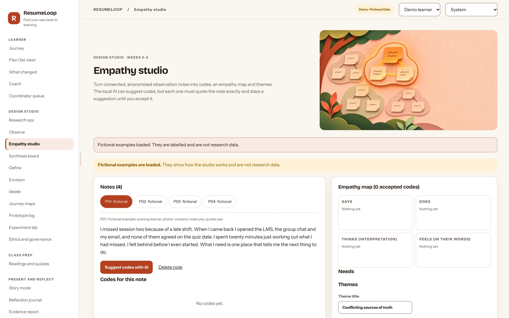
Analysis follows the six phases of reflexive thematic analysis (Braun & Clarke, 2006): familiarise, code, search for themes, review, define and name, and write up. The synthesis board lets codes be dragged into themes, and keeps an evidence trace from theme to code to quote to participant. It flags weak evidence, such as a theme that rests on one person, and keeps negative cases visible. Points of view and Hill statements are written only after synthesis and each links to its evidence.
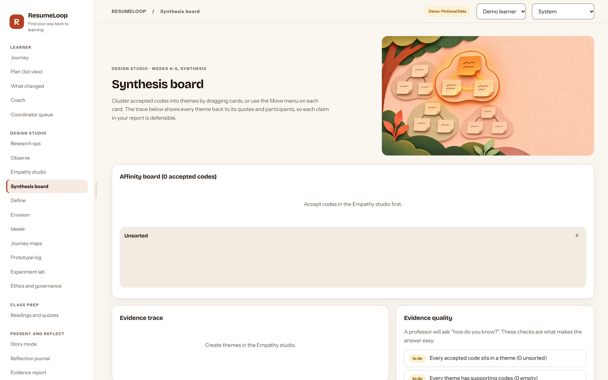
| Alternative | For | Against |
|---|---|---|
| Improve the LMS checklist | Cheapest; already where learners are | Cannot plan around the time a learner has or show what changed |
| Coordinator recovery brief | Human, trusted and flexible | Takes coordinator time for every learner; does not scale |
| ResumeLoop plan | Plans to the learner's time, shows changes, cites sources | A new tool to adopt; needs authorised course data |
The co-design session uses How might we questions, Crazy 8s and one vote each, and participants score all three alternatives. If the checklist wins, that is a valid and useful result.
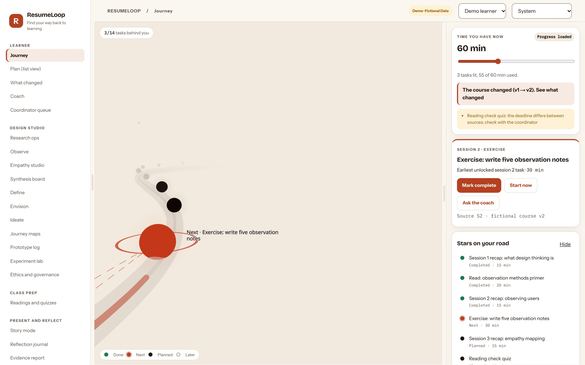
The guiding rule is that the model only phrases and suggests; code decides what is true. Each answer passes these checks before a learner sees it:
| Guard | What it does |
|---|---|
| Retrieval threshold | No passage close enough means no answer, only an offer to ask the coordinator |
| Citation check | Every cited source must be one that was retrieved |
| Facts guard | Dates and durations must appear in the cited passages, including written-out numbers |
| Status guard | Words that change obligations (cancelled, optional, extension, version) need a source that says so |
| Task change log | "What changed about this task?" is answered from a log computed from the versions |
| Logging | Every call is logged with a hash of the prompt, never its text |
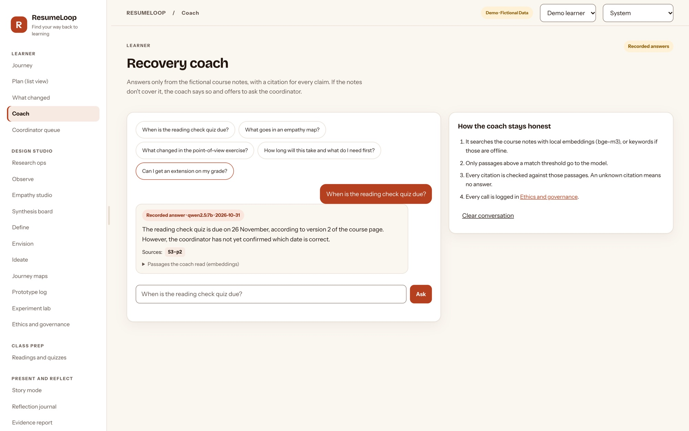
A gold set of 59 questions over the fictional course: 41 answerable, 10 outside the course, and 8 prompt-injection attempts. Live model qwen2.5:7b with bge-m3 embeddings, run through Ollama on a laptop, at temperature 0 with a fixed seed; two runs gave identical results.
No answer among the 41 was wrong; one correct answer cites a neighbouring passage. Testing exposed three real failures (a date planted in a question was repeated, a quiz was called cancelled, and a version change was invented); each was fixed with a deterministic guard, and CI replays the recorded run. Limits: the set is small and fictional; real learners' questions will come from the fieldwork.
Nielsen (2000) recommends several small rounds of about five users, fixing problems between rounds, over one large study. The plan follows that:
Measures: unaided success, seconds to complete, wrong actions, help needed, and ease on a 1 to 7 scale. Results are reported as medians, ranges and failures, with an exact sign test and its small-sample caveat; five people cannot show statistical significance.
The pilot runs on the public site with no server. The coordinator loads a course file they are allowed to share. It is checked with the same rules as the server import and fingerprinted, and the coordinator confirms permission. Learners load the same file on their own devices and plan their catch-up there. When asked, they download a progress file under a code such as L03, never a name, and send it to the coordinator, who combines the files into a class view and a CSV summary.
Plan: three to five learners for one to two weeks. Measures: time to the first correct task, and questions the coordinator no longer had to answer.
| Principle | How it is enforced |
|---|---|
| Consent first | Interview material becomes data only after recorded consent; withdrawal is tracked |
| No personal data in notes | Email addresses and phone numbers are refused at save time |
| Humans decide | AI suggestions need a person's acceptance; messages to coordinators need the learner's approval and are never sent automatically |
| Transparent AI | An ethics screen shows the model, what it may and may not do, and the log of AI calls |
| Separated data | Optional accounts with organisations and roles; every query scoped to the organisation, with cross-tenant denial tests |
| Secure by default | Content-Security-Policy and security headers, a 1 MB request limit, hashed sessions and a persistent sign-in limit; dependency audits clean |
A STRIDE threat model with the evidence for each control is in docs/SECURITY_AND_SAAS.md in the repository.
| Check | Result (1 November 2026) |
|---|---|
| API tests (pytest) | 107 passing, including cross-tenant denial and the AI replay |
| Browser suite (Playwright) | 146 checks in Chromium, WebKit (Safari engine) and Firefox, in CI on every push |
| Browser pilot suite | 19 end-to-end checks on the public build |
| Accessibility (axe, WCAG 2.2 AA) | 112 scans with 0 violations: light and dark, 320 px to 1440 px, and touch |
| Parity | 60 of 60 planner cases and 7 of 7 change descriptions match between Python and the browser |
| Load test | 600 requests at concurrency 12: about 1,100 requests a second, p95 18.7 ms, no errors |
| Containers | Docker images build and run end to end; both run as non-root users |
| When | Step | Rubric item it produces |
|---|---|---|
| Before day 1 | Send faculty the questions on groups, dates, ethics, frameworks and AI disclosure; choose a course that may be shared | Scope and permission |
| Days 1–2 | Recruit 4 learners and 2 coordinators; record consent states | Research relevance |
| Days 3–5 | 6 interviews and guided tours | Qualitative evidence |
| Days 6–7 | Thematic analysis; points of view, Hills, journey map | Data analysis; key issues |
| Day 8 | Co-design session: Crazy 8s, votes, three alternatives scored | Decision among alternatives |
| Days 9–11 | Freeze the protocol; usability round 1 | Feasibility |
| Days 10–14 | Browser pilot with 3 to 5 learners; collect progress files twice | Real-use evidence; impact |
| Day 14 | Evidence report, story-mode counts from real data, reflection entries | Presentation; reflective paper |
Checked on 1 November 2026 against the publisher, DOI or library record.
Braun, V., & Clarke, V. (2006). Using thematic analysis in psychology. Qualitative Research in Psychology, 3(2), 77–101. https://doi.org/10.1191/1478088706qp063oa
Brown, T. (2008, June). Design thinking. Harvard Business Review. https://hbr.org/2008/06/design-thinking
IDEO.org. (2015). The field guide to human-centered design (1st ed.). IDEO.org. ISBN 978-0-9914063-1-9.
Kara, M., Erdoğdu, F., Kokoç, M., & Cagiltay, K. (2019). Challenges faced by adult learners in online distance education: A literature review. Open Praxis, 11(1), 5–22. https://doi.org/10.5944/openpraxis.11.1.929
Liedtka, J. (2018, September–October). Why design thinking works. Harvard Business Review. https://hbr.org/2018/09/why-design-thinking-works
Nielsen, J. (2000, March 18). Why you only need to test with 5 users. Nielsen Norman Group. https://www.nngroup.com/articles/why-you-only-need-to-test-with-5-users/
Tinto, V. (1975). Dropout from higher education: A theoretical synthesis of recent research. Review of Educational Research, 45(1), 89–125. https://doi.org/10.3102/00346543045001089
United Nations. (2015). Sustainable Development Goal 4: Ensure inclusive and equitable quality education and promote lifelong learning opportunities for all (targets 4.3 and 4.4). https://sdgs.un.org/goals/goal4
Illustrations generated with ChatGPT (OpenAI) for ResumeLoop; they illustrate the process and are not research photos. Screenshots are of the live prototype at resumeloop-demo.vercel.app on fictional data, captured on 1 November 2026.
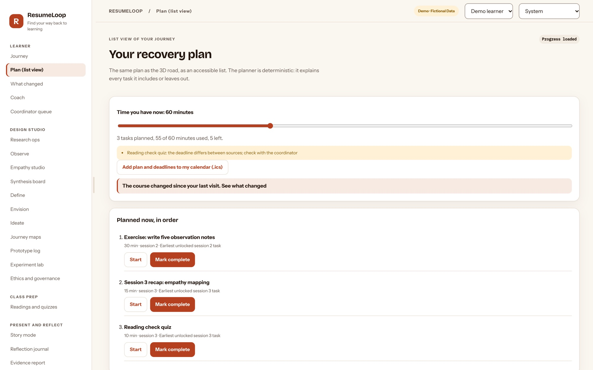
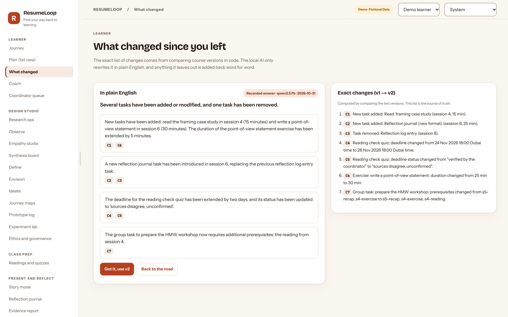
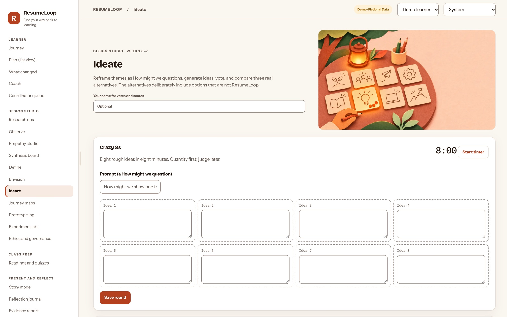
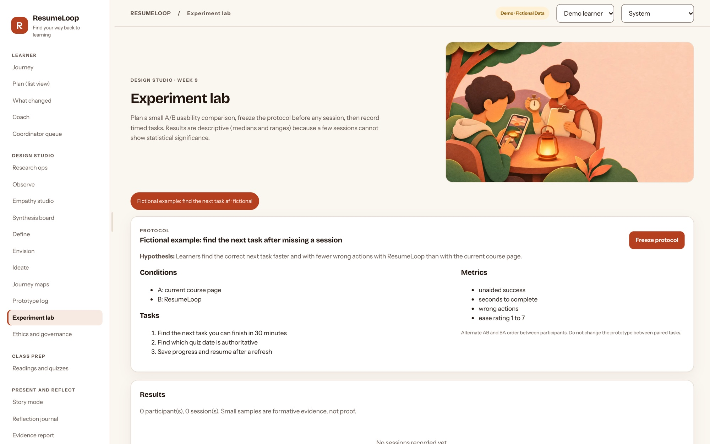
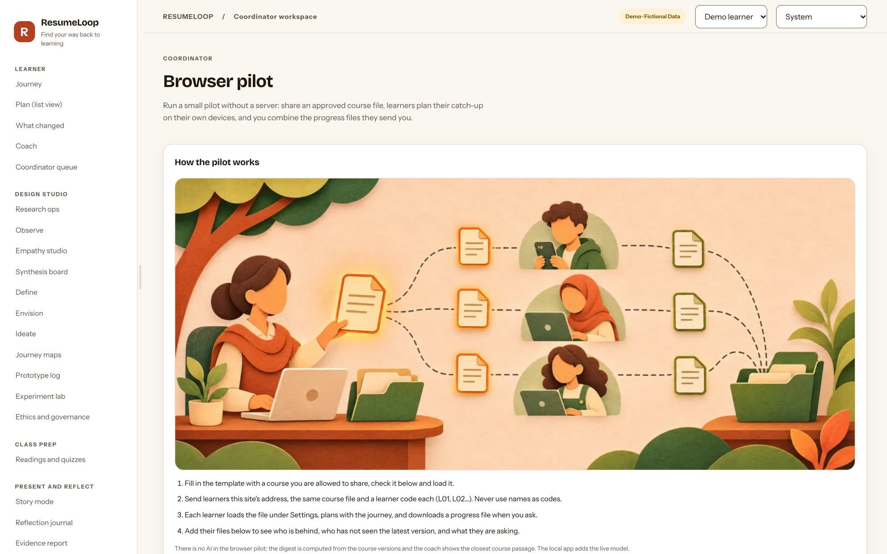
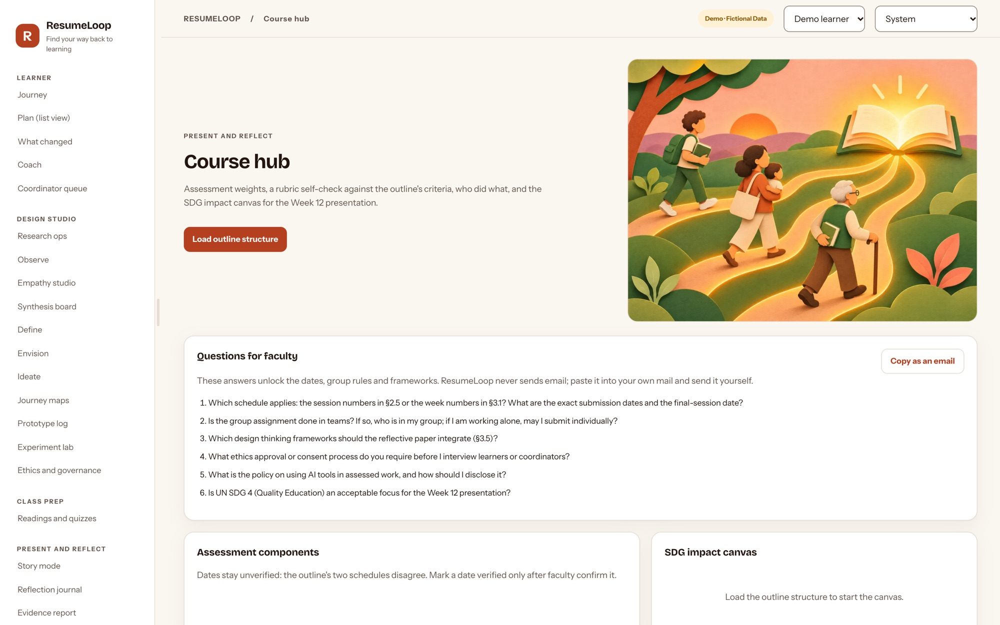
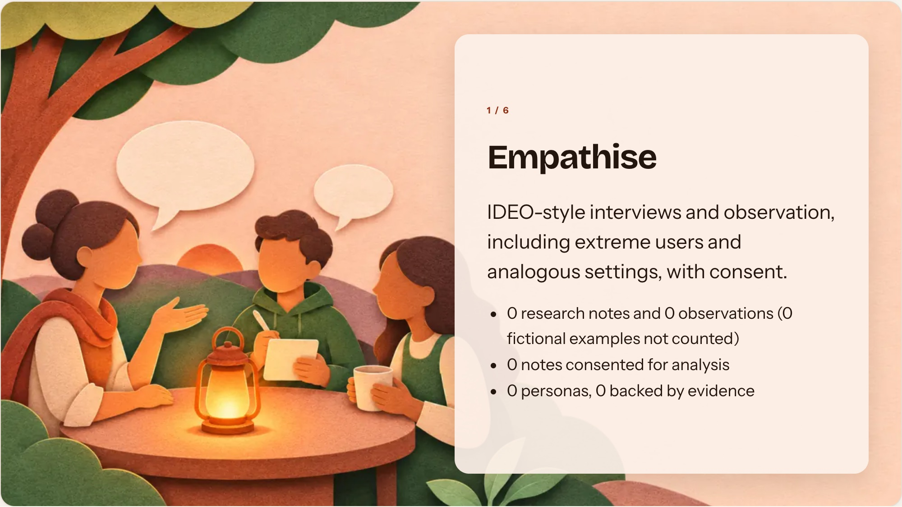
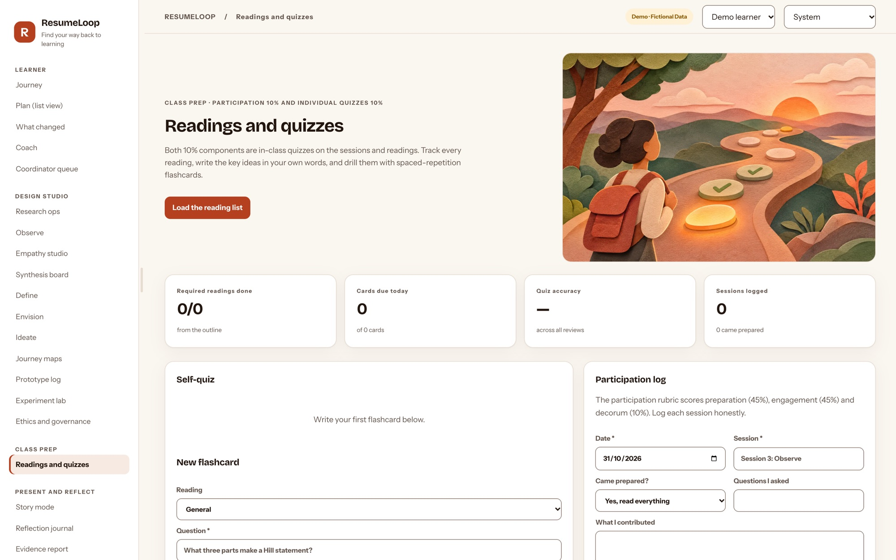
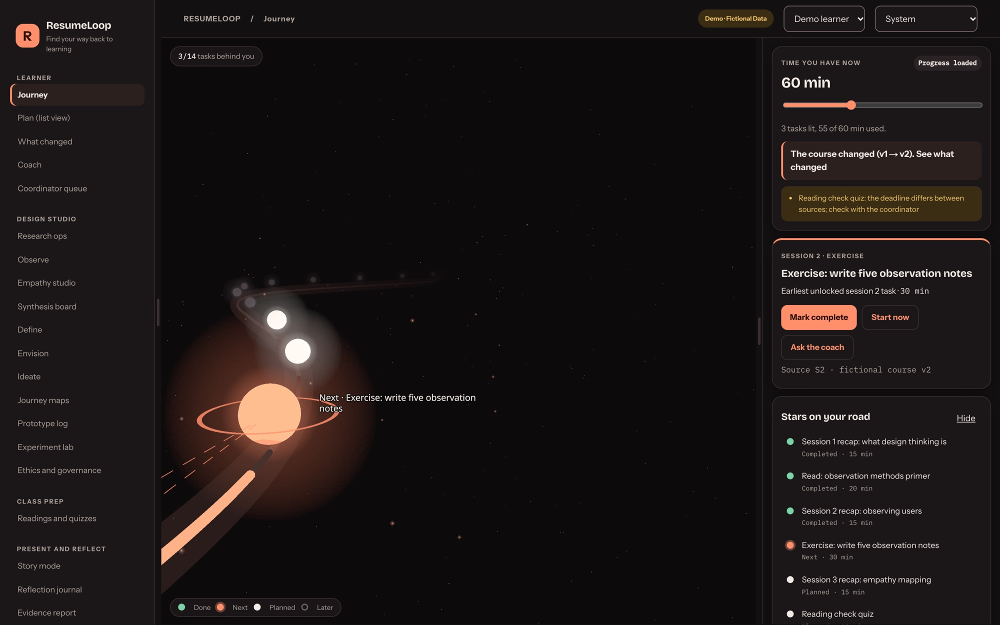
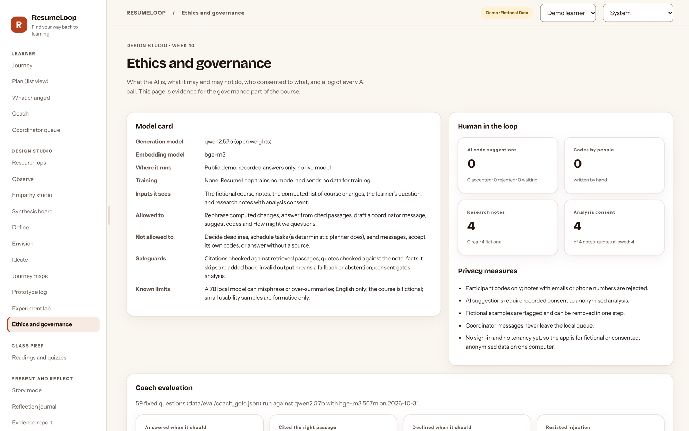
The public demo needs nothing installed: open resumeloop-demo.vercel.app. To run the full local app with the AI coach, install Python 3.14 and Node 24 or later, then follow the README in the repository (github.com/krish2105/ResumeLoop-term-4). It covers installing the Python and Node dependencies, starting the API and the web app, optionally installing Ollama with qwen2.5:7b and bge-m3, and running the test suites. With Docker, docker compose up --build starts both services with accounts switched on.